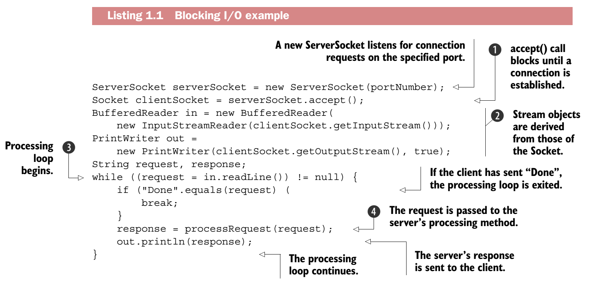
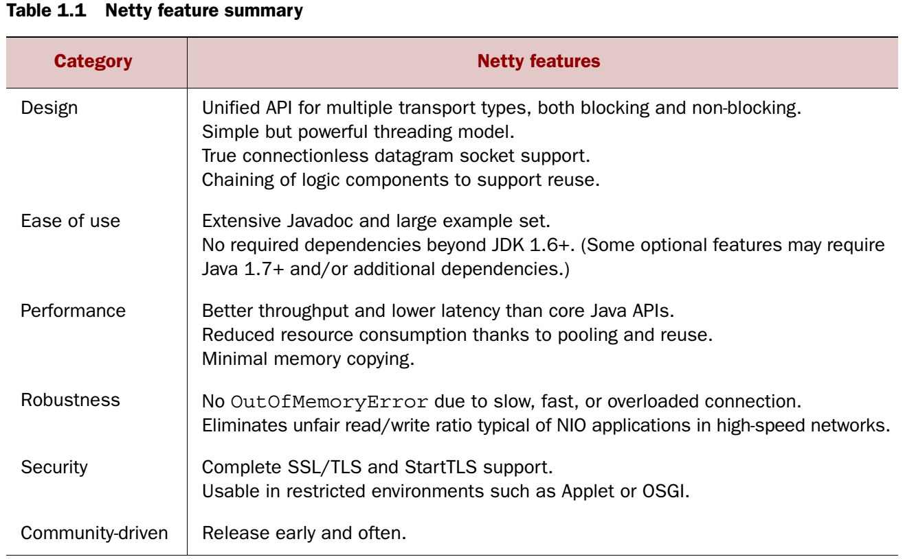
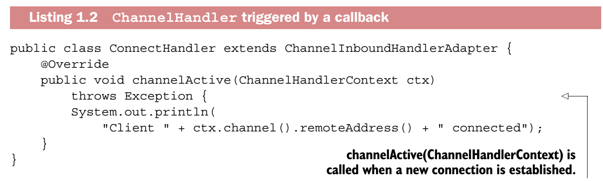
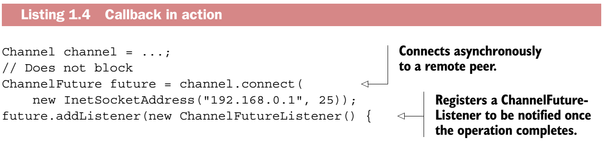
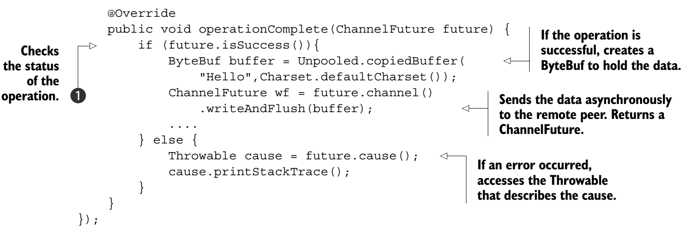

Chapter 1 - Netty - asynchronous and event-driven
Networking in Java
Previously we have to use one thread per connection to do the read/write, this has problems:
- Resource waste
- Memory allocation
- Limit on number of threads supported by JVM

Selector
It's the key for JAVA NIO, it uses event notification API to indicate if a socket is done read/write
Introducing Netty

Netty's core components
Channel
Just like a car with incoming and outcoming messages
Callbacks
Netty uses callbacks internally when handling events; when a callback is triggered the event can be handled by an implementation of interface ChannelHandler. The next listing shows an example: when a new connection has been established the ChannelHandler callback channelActive() will be called and will print a message.

Future
- Provide a way to notify the application when the operation is completed
- Java's Future can only provide manual check for the status of the operation
- Netty's Future does not need to do manual check anymore
- Netty's ChannelFuture is able to let you register to the ChannelFutureListener interfaces, the listener has a callback has a callback methods for indication of completion


Events and handlers
Summary
Future, Callbacks and Handlers: provide a processing environment that allows the logic of your application to evolve independently of any concerns with network operations.
Selectors, Events, and EventLoops: abstracts the Selector away from the application by firing events, eliminating all the handwritten dispatch code that would otherwise be required, also eliminates any concern you might have about synchronization in ChannelHandlers.